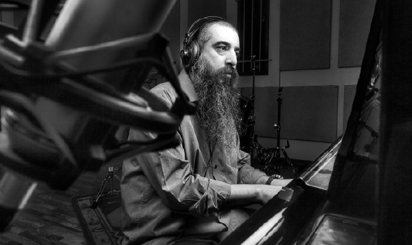

Musical Compositions of Return and Redemption
About a promising musician whose friends predicted great things for him. He changed direction and decided to rectify the world of music and bring the message of Geula to Israelis in Eretz Yisroel and around the world.

In recent years, Akiviov has become a well-known creative force within the Jewish music genre. His hits include “T’filla L’Ani,” “Nos’im Nos’im,” and “Basi L’Gani.” He was also involved in producing the hit “Ana B’Ko’ach” that is all the rage on the radio stations. He told his personal story casually as though there is nothing special about a gifted creative artist and musician becoming a bearded Lubavitcher Chassid.
MUSICAL PRODIGY
He was born in Petach Tikvah to a traditional family, the youngest brother of five children. His older brothers stood out for their artistic abilities. The house lived and breathed art, with art exhibits and craft displays being an inseparable part of their childhoods. All that did not interfere with Gil being drawn to another art form, that of music.
“Since I can remember, I have had a special love for music. When I recall childhood memories, they are intertwined with the music I was listening to at the time. I remember moments of summer and winter with music in the background.”
Now and then, Gil would play on his older sister’s piano. By the age of eight his parents took note of his musical potential and sent him to study piano. He also stood out for his singing ability.
“I was a musical child who sang at school events and on all sorts of occasions.” At his older sister’s wedding he sang before the crowd who were exceedingly impressed. A relative who was there decided that she wanted to advance his musical abilities so she registered Gil for a children’s song festival.
“To be accepted at the festival was a dream come true, because hundreds of children auditioned.” Not only was Gil accepted at the festival, he also stood out as a talented musician. Some of the songs that he performed then with well-known singers became hits.
When Gil became bar mitzva, his parents offered him a choice: to have the celebration in an elegant hall or to have a simpler party and they would buy him a studio for the house.
“I chose the second option and got a piano and studio equipment, including a full sound, recording and arrangement system. So from a very young age I learned to compose and record songs. I would write songs and record myself with the sound system.
When Gil was drafted he was chosen for the military band as a soloist. At the same time, he began recording an album of songs he wrote.
“Throughout that time, I was growing as a musician. Music filled my entire world. I had no interest at that time in Judaism; I was consumed by music.”
WHO ARE THESE CHABADNIKIM?
Gil’s first encounter with Chabad was through television, when the victory of the s’farim on Hei Teves was broadcast on the news.
“Until then, religious people seemed distant and strange to me. I thought, ‘Poor folk who have to keep the entire Torah,’ but when I saw the Didan Natzach story I saw something unusual. Chassidim were dancing in 770 and to me, at first it was just a lot of religious guys dancing. But then, in the middle of the report I saw the Chassidim telling the reporter, ‘Drop everything and come join our dancing and say l’chaim!’ and the reporter did just that. I asked my mother who these people were and she said they were Chabad Chassidim. I asked her why all the religious Jews weren’t like them because if they were, the world would be a lot nicer … That left me with a good memory of Chabad Chassidim.”
Later on, when Chabad started the “Hichonu L’Bias HaMoshiach” campaign, Gil took note.
“I remember the mitzva tanks and the convoys they made as part of the campaign. It won my heart. The truth is that the campaign looked weird to me but I remember the simcha I saw by the chassidim.”
But these encounters were only a preparation for his real encounter with Chabad and the Rebbe.
“When I began working on my album, I worked in the studio of Nissim Olgan, a musician who was beginning to get involved with Chabad. One day, I went to visit him at home and saw a library of holy books. In the living room were two pictures, of the Rebbe and the Rebbe Rayatz. I asked him to whom this all belonged and when he said it was his, I was taken aback. ‘What’s your connection with all this? Who are these rabbis?’ I asked. He told me about the Rebbe and the Rebbe Rayatz and that he was interested in Chassidus. ‘Yeah, I heard about the Lubavitcher Rebbe,’ I said.
“I suddenly had a disturbing thought that if Nissim was doing t’shuva, we wouldn’t be able to be friends any longer. A religious person couldn’t be a friend of mine. But Nissim told me about the Rebbe and explained that the Rebbe’s way is different. At that time he was keeping Shabbos and kashrus and putting on t’fillin, but it was an inner process, nothing was apparent externally.
“One day, I went to the studio and saw him recording a song about the Rebbe. I couldn’t believe it. It didn’t sit well with me and I tried to understand what was unique about this Rebbe that people loved him so much.”
A CHASSID IN THE STUDIO WITH TALLIS AND TEFILLIN
One morning, a surprise awaited Gil in the studio in Kfar Sirkin. He went into the recording room and found three Chassidishe bachurim along with a married Lubavitcher man in tallis and t’fillin deep in prayer. They were bachurim who came from 770 to produce Niggunei HaRebbi. The Chassid with them was Avi Piamenta.
“I knew this was meant to be a working session but I had no idea who I was going to meet. The sight of the Chassidishe bachurim and the Lubavitcher with t’fillin blew me away. Within a few minutes, Avi Piamenta motioned to them to ask me whether I wanted to put on t’fillin. I said I had no problem putting on t’fillin; I just did not know how.
“As a kid, I had a friend who put on t’fillin every day once he became bar mitzva, and one time, when he slept over at my house, I saw him putting on t’fillin. I wanted to do so too, but was ashamed to tell him that I didn’t know how. This time, the bachurim put the t’fillin on me and explained how to do it.
“When I took them off, I had this special feeling. Avi began talking to me and when I told him that I was happy that I put on t’fillin, he became very excited. He told me, ‘You have no idea what nachas you caused in heaven by putting on t’fillin.’ He said this in a way that opened up something really deep inside me. He knew how to reach me at that moment.
“Without knowing why, a childhood memory suddenly overcame me, of a terrible car accident in which I was badly injured. When I recovered, the doctors were amazed and called me a medical miracle because not too many people believed I would survive and walk on my own two feet.
“After the accident, they kept telling me that I survived because of my will to live, but that didn’t sit well with me, because I felt there had to be something Higher in whose merit I was alive. During that conversation in the studio, when I was reminded of that accident, I felt I had to thank Hashem for the miracle that occurred to me. While thinking these thoughts, I told the Lubavitchers that I was committing to putting on t’fillin every day.
“When they came back to the studio a week later, I brought my t’fillin along and was told they were pasul. Nissim Olgan told me I had to buy new ones and recommended that I buy them in Kfar Chabad. In the meantime, I got a pair of t’fillin from R’ Meir Halperin from the Chabad house in Cholon and put them on every day. That is how my involvement in the Jewish world began.
“I thought that putting on t’fillin was good and didn’t think beyond that,” said Gil, but friends of his sensed that the promising musician was starting to change direction. Many of them were in shock and tried to dissuade him. “You will get swept along and do t’shuva in the end,” they said to him. But he didn’t see a problem with that. If it was the truth, then fine; if not, what was there to fear?
At first, all Gil did was put on t’fillin daily, but as time went on, he began having long conversations with Nissim.
“I started to experience the t’shuva process with Nissim and we became very close friends. In the middle of work we would sit and learn a sicha, a maamer, or a nice Chassidic story.” Then there were farbrengens with the Lubavitchers who came to the studio. The bachurim who produced the niggunim of the Rebbe brought Mendy Jerufi to sing and every time the Lubavitchers came, along with Avi Piamenta, they would farbreng in the studio with a bit of l’chaim and stories.
R’ Tuvia Bolton also came to record and he opened the way for Gil to Kfar Chabad. “I was fascinated to meet someone who was a rabbi as well as a musician, a Chassid with a long beard and a guitar. I didn’t understand how a rabbi made music like that. He was warm and friendly and very interesting, and I was drawn in little by little.”
ENCOUNTERING TANYA
Along with Shabbasos spent with R’ Bolton in Kfar Chabad, Gil began learning Tanya every week in a shiur started by R’ Yariv Rom in Petach Tikvah. He began getting acquainted with the depth of the ideas in Tanya and after shiurim in Chassidus there were also farbrengens and stories about the Rebbe. Gil took his learning seriously and the more he delved, the more captivated he became by the world of Chassidus.
“I felt a fire begin to grab hold of me. Although I did not wear a kippa, I decided that if this is the truth, I would go all the way.”
WHY NO KIPPA YET?
“I didn’t have the guts to announce that I was religious. That was too much for my friends. As it is, they were scared that my musical career was going down the tubes because of my doing t’shuva.”
Gil heard that a new yeshiva had opened in Ramat Aviv and he decided to visit. He was looking for a place where he could devote himself to learning. The yeshiva was brand new and the shiurim took place in a rented apartment. Gil began visiting the yeshiva while continuing his work in music.
“I would go to the yeshiva to learn and then go to the studio to work on my songs. But I realized that something had changed in my life. The songs that I had written before I did t’shuva no longer suited me; I did not relate to them. It was great music but the words no longer spoke to me.”
It was no simple matter for Gil to realize that he had parted ways with the first album he had written and composed. After years of work and an enormous investment in recording it, he decided to put it aside and to rethink his artistic path. Instead of songs about his earlier life experiences, he began creating a new album with songs pertaining to t’shuva. That is how his first album T’filla L’Ani came to be, which enjoyed unprecedented success and is considered, until today, as one of the top albums in the Jewish alternative music genre.
“Every song has a story. The title song of the album, “T’filla L’Ani,” came to me on the day I bought new t’fillin. After using borrowed t’fillin from the Chabad house in Cholon, I thought the time had come to buy my own t’fillin. I ordered t’fillin from Kfar Chabad and when I arrived to pick them up, I also bought a T’hillas Hashem siddur with T’hillim and a booklet with the Krias Shma.
“The next morning I got up happily and put on my new t’fillin. It was a very uplifting feeling that I had something new that would be with me all my life. I read the Shma and then looked for something else to say. I opened the T’hillim randomly and it opened to chapter 102. I read the words for the first time in my life, “T’filla l’ani … A prayer for a poor man when he enwraps himself and pours out his speech before the Lord. O Lord, hearken to my prayer, and may my cry come to You.” The words shook me. I said to myself in amazement, ‘These words are nice!’
“As I read the psalm, I was drawn into the words and there, with tallis and t’fillin, I sat down at the piano and began to play them to a tune that came to me. The words poured out of me in song and that is how the composition was born. Till today, I sing this song in interviews that I do for TV and I tell the story behind the song. I always get warm feedback from people who heard the song and were moved by it.”
The other songs on the album also grew out of his personal connection to the new themes he was discovering.
“I composed the song ‘Basi L’Gani’ after learning the Rebbe’s maamer. ‘Ashrei HaIsh’ and ‘Mizmor l’Dovid’ I composed when I was saying those words in T’hillim and they touched me.”
SANCTIFYING THE MUSIC
“One day I went home and, as I usually did, I took off my kippa and put it in my pocket. My father, who was not a religious man, asked me why I was ashamed to wear a kippa. ‘You’re a Jew!’ he said to me.”
So Gil took his tzitzis out of his shirt and put the kippa back on. That was the final step in the transformation of his life.
Gil went back to yeshiva and decided to do so full time. Along with his learning he began promoting singles from his new album to radio stations. In addition to songs that were composed to words in T’hillim, there were also new songs written by the musician Ovadia Hamama. The idea of creating songs with lyrics that describe the world of t’shuva and the struggles along the journey of life came about when Ovadia expressed to Gil his bewilderment as to why he was only composing songs to words from T’hillim.
“Your songs used to be artistically open. Why limit yourself? Continue saying what you want; just direct it to the new place you are in.” His puzzlement came from a Lubavitcher way of thinking which is to use every skill and talent for shlichus and for rectifying the world.
Gil said, “We had many conversations and spoke about the Rebbe’s instruction to Boruch Nachshon the artist, to rectify art in the world. We thought we could also rectify Israeli music with songs that have messages of t’shuva and Geula. The Rebbe’s direction gave me the strength to go to Ovadia in the spirit of Chabad and ask him to write lyrics for my compositions. I asked him, as someone who understood my path of t’shuva, to write about the process. The first song that he wrote was ‘Nos’im, Nos’im,’ in which he describes the t’shuva journey.”
When you hear the words of the song, although on the surface they seem to be a free-form poem describing the search for meaning in life, you can’t miss the point.
Back then, the world of Chassidic music was still unaware of the new style of alternative music. In the period before Shuli Rand and the Razel brothers, Gil’s music was a breath of fresh air. The songs moved to the top of the playlists on Channel 7 and the religious stations. And not just there. The radio stations that were not religious loved his original music that combines an Israeli style with Jewish content. The songs “Ashrei HaIsh,” “Basi L’Gani,” and “T’filla L’Ani” became hits in thousands of Jewish homes.
However, on the major stations they were still afraid to play “religious” music. “I once went to an interview with Ovadia and I brought my CD to the producer. He was enthusiastic about it; he considered it revolutionary, but they were afraid to play this kind of music. Today things have changed boruch Hashem and Jewish music is played on all stations.”
THE HA’YOM YOM ON A MUSICAL ALBUM
The great success and praise did not go to Gil’s head. He was busy learning in yeshiva, at first in Ramat Aviv and then in Tzfas. There too he continued to utilize his creative talents. When he learned that you are supposed to say a verse from Tanach at the end of Shmoneh Esrei, he immediately composed a tune to the verse, “Gam Ani Odcha,” the verse that corresponds to his name.
Another composition is connected to the entry in the HaYom Yom for 18 Sivan: “This is the actual time of the “footsteps of Moshiach.” It is therefore imperative for every Jew to seek his fellow’s welfare - whether old or young - to inspire the other to t’shuva, so that he will not fall out - G-d forbid - of the community of Israel who will shortly be privileged, with G-d’s help, to experience complete redemption.” This song too came to Gil as he was learning and from there it was a short trip to the piano to compose a tune to these words.
“I felt compelled to compose this song. I was a chassan and I had just come back from 770 after my aliya to the Torah before the wedding. I went home, sat down at the piano and composed a tune to these words.”
The album he created at that time also contained the hit “Tzrichim L’Farseim L’Chol Anshei Ha’dor” with the words from the sicha of Shoftim 5751 about publicizing to the world that Hashem chose someone well above the rest of humanity to be the judge, advisor, and prophet. That also came from Gil’s learning.
After he married, Gil moved to Kfar Chabad and continued to work on his next album. His next album, B’sura Tova, includes a variety of songs and compositions, a large part of them dealing with the Besuras Ha’Geula and the Rebbe’s prophecy of hinei zeh Moshiach ba.
“My shlichus is to reach those places that are not ordinarily accessible,” says Gil. He was once invited to a television program to tell his t’shuva story. Also invited was a young man who had been religious and who had gone off the derech. The tension at the beginning of the program dissipated as Gil took his guitar and began playing his song “Nos’im, Nos’im.” The interviewer got swept up in it and by the end of the program it was clear who made a greater impression on the viewers.
“ANA B’KO’ACH”
After recording B’sura Tova, Gil produced an entire CD with Chabad niggunim that he called Chedva D’Niguna. This CD was also aired on radio and television programs that are devoted to music. The CD has over ten Chabad niggunim with new arrangements while preserving the authenticity of the original niggun. The flavor is that of a Chassidishe farbrengen.
There was also his involvement in arranging the hit “Ana B’Ko’ach” that took off on all the radio stations. Gil says that every album of his or Ovadia’s is created with their joint efforts, with each helping the other. On Gil’s albums you can see Ovadia’s name on nearly every song and likewise with Ovadia’s albums, in which Gil partnered with him on the creative side. The partnership between the two of them happened right after Gil’s army service when they began to work together on musical projects. They immediately saw how they worked well together, personally and creatively.
“One day, Ovadia told me he has a song that I have to work on. He said that every day he said the prayer ‘Ana B’Ko’ach’ and he decided to compose a song to these words. We did all the musical arrangements together. I told him that his new album had to be produced completely al taharas ha’kodesh without women singing, and only with holy messages. We did not yet know that this album would become a hit thanks to the song ‘Ana B’Ko’ach.’
“At first, we didn’t realize the power of this song. After the entire recording was ready and Ovadia began releasing singles to radio stations, he told me that the songs weren’t grabbing a spot on the playlists.
“I asked him, ‘What about ‘Ana B’Ko’ach?’ I suggested that he put it out as a single. By divine providence, just then, the musician Ehud Banai got back to me about the idea of joining as the tenth man in the minyan singing the song. We had decided to follow R’ Mordechai Eliyahu’s advice and to record the song with a minyan since it is customary to sing it in this way. Until that point, we were nine musicians and with Ehud, we were ten.”
“The song (at over 5 minutes) is considered very long, so it didn’t make sense for it to catch on the radio where they look for short songs of less than four minutes duration. Surprisingly, the song began to be played on the radio all the time. Within a short time the song made an enormous impact. Numerous people contacted us and we were able to have an influence on them. I was drafted to produce ‘Ana B’Ko’ach’ and to appear in places we were invited to sing it. I found myself together with Ovadia, working hand in hand on every step of the production. We saw it as a shlichus.”
THE FEATHER THAT WILL TIP THE SCALES TOWARD GEULA
Throughout that time, between releases, Gil and Ovadia worked on an album together.
“I told Ovadia that we’re working together anyway, with his writing for me and my arranging for him, so it was time we produced an album together.”
The CD was completed last June, after several years of work. What makes this album special is that all the songs have to do with the Geula and the anticipation of its coming.
“We started collecting songs. I began to write notes for the songs that I had on the topic of Geula. One of the songs is about the anecdote of R’ Zushe of Anipoli who said that in the world to come they would only judge why he wasn’t Zushe. The lead song is about what will tip the scales toward Geula, which is based on the Rebbe’s words. We called the CD HaNotza (the feather), the feather that will tip the entire world toward merit and bring about the hisgalus. Ovadia told me right away that if we were going to do an album together, it should be about Geula.
“Geula is a somewhat frightening word to people … so in the media we called the CD tikkun ha’olam. Each of us brings his own perspective: As a Chabadnik, I emphasize the Geula, while Ovadia emphasizes the aspect of personal Geula which is part of the overall Geula. The texts are very deep and contain the loftiest ideas of Chassidus. These songs contain topics spoken about in Chassidus and each song addresses the Geula from a different angle. The fact that this is the creation of two artists provides it with a broader perspective and there is the joining together of a number of creative styles which is very unique.
“This CD is dedicated toward conveying the message of Moshiach ‘b’ofen ha’miskabel.’ We prepared ‘weapons’ for the shluchim which they can use to be mekarev their mekuravim toward the topic of Moshiach and Geula. This CD is not meant for Lubavitchers but for mekuravim who love professional music. When they listen to it, they will also relate to the words and messages.
“With every CD I try to convey the Besuras Ha’Geula, but this time, the entire album is about Geula. The CD of Chabad niggunim was intended to bring those niggunim to an audience not used to listening to Chassidic niggunim. The goal of this new CD is to bring the message of Geula to people who are not used to thinking and talking about the Geula. People who, until now, thought the Geula is something abstract and distant, will relate to the message that now is the time for the Geula through these songs.”
SPECIAL APPEARANCE
“As for feedback, lots of people say that through the CD they relate to the message of anticipating the Geula. People write us letters saying the CD fills their lives with new musical strains. Some listen to the CD in the car. Instead of listening to something else, they listen to a CD about Geula with quality music. As they travel they internalize the messages.”
Gil recently finished working on a new performance that he plans on bringing to Chabad houses in Eretz Yisroel and abroad. The performance consists of the hits from his three albums along with Chabad niggunim, interspersed with Gil telling his story of t’shuva. The performances abroad are meant for Israelis who love familiar music from home and enjoy quality Israeli music.
“The goal of the new performance is to continue what we started with the albums, to bring to our audiences the music that they love and through the music, to get them to connect to the deep messages in the songs in a light manner which speaks to them.
“I feel that my shlichus is to bring the world of Chassidus to people through music and most importantly, to use the platform that was given to me to carry out the only remaining shlichus of kabbalas p’nei Moshiach Tzidkeinu.”
Sholom Ber Crombie. "Musical Compositions of Return and Redemption." Beis Moshiach, no. 912 (January 24, 2014).